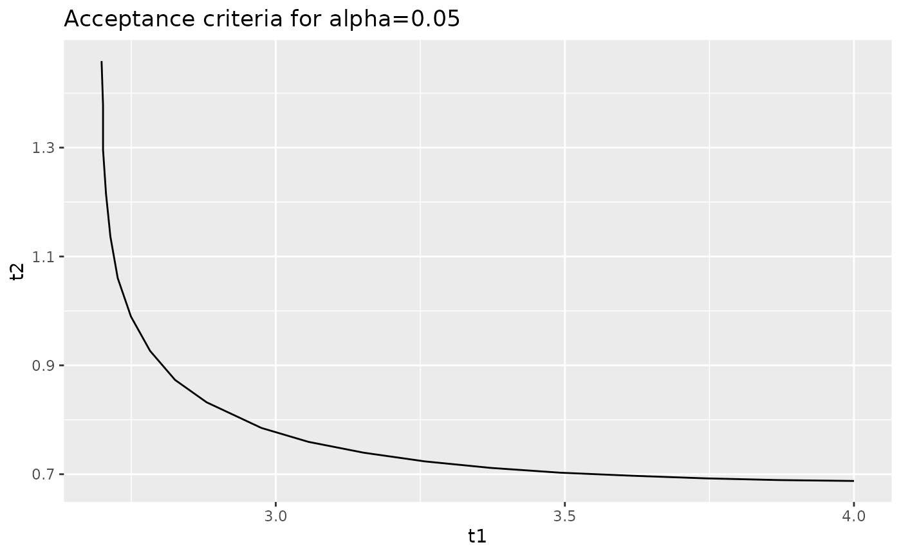
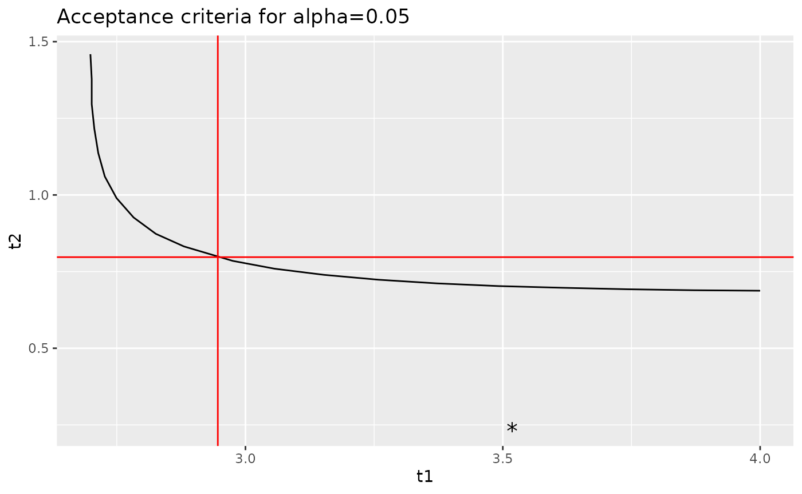
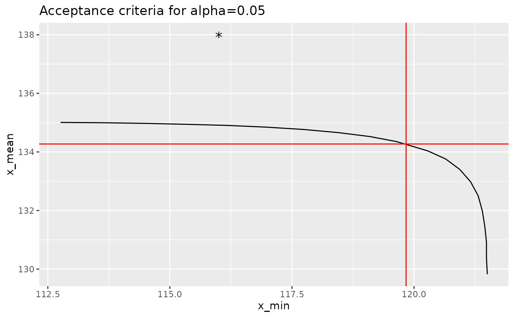

p-Values for Equivalency
Stefan Kloppenborg
2024-05-07
Source:vignettes/equivalency-p-values.Rmd
equivalency-p-values.RmdIntroduction
The dual acceptance criteria used for composite materials accept or reject a new lot of material (or a process change) based on the sample minimum and sample mean from the new lot of material. Acceptance limits are normally set such that under the null hypothesis, there is an equal probability of rejecting the lot due to the minimum and rejecting the lot due to the mean. These acceptance limits are set so that the probability of rejecting the lot (due to either the minimum or mean) under the null hypothesis is \(\alpha\). If we eliminate the constraint that there is an equal probability of rejecting a lot due to the minimum or the mean, there is not longer unique values for the acceptance limits: instead, we can calculate a p-value from the sample minimum and the sample mean and compare this p-value with the selected value of \(\alpha\).
The cmstatrExt package provides functions for computing
acceptance limits, p-values and curves indicating all values of the
minimum and mean that result in the same p-value. This vignette
demonstrates this functionality. The “two-sample” method in which only
the sample statistics for the qualification data are known.
Caution: If the true mean of the population from which the acceptance sample is drawn is higher than the population mean for the qualification distribution, then using the p-value method here may declare an acceptance sample as equivalent even if the standard deviation is larger. This is due to the fact that this statistical test is a one-sided test. Similarly, if the acceptance population has a much lower standard deviation than the qualification population, this test may allow for an undesirable decrease in mean. As such, considerable judgement is required when using this method.
In this vignette, we’ll use the cmstatrExt package.
We’ll also use the tidyverse package for data manipulation
and graphing. Finally, we’ll use one of the example data sets from the
cmstatr package.
Example Data
As an example, we’ll use the RTD warp tension strength from the
carbon.fabric.2 example data set from the
cmstatr package. This data is as follows:
dat <- carbon.fabric.2 %>%
filter(condition == "RTD" & test == "WT")
dat
#> test condition batch panel thickness nplies strength modulus failure_mode
#> 1 WT RTD A 1 0.113 14 129.224 8.733 LAB
#> 2 WT RTD A 1 0.112 14 144.702 8.934 LAT,LWB
#> 3 WT RTD A 1 0.113 14 137.194 8.896 LAB
#> 4 WT RTD A 1 0.113 14 139.728 8.835 LAT,LWB
#> 5 WT RTD A 2 0.113 14 127.286 9.220 LAB
#> 6 WT RTD A 2 0.111 14 129.261 9.463 LAT
#> 7 WT RTD A 2 0.112 14 130.031 9.348 LAB
#> 8 WT RTD B 1 0.111 14 140.038 9.244 LAT,LGM
#> 9 WT RTD B 1 0.111 14 132.880 9.267 LWT
#> 10 WT RTD B 1 0.113 14 132.104 9.198 LAT
#> 11 WT RTD B 2 0.114 14 137.618 9.179 LAT,LAB
#> 12 WT RTD B 2 0.113 14 139.217 9.123 LAB
#> 13 WT RTD B 2 0.113 14 134.912 9.116 LAT
#> 14 WT RTD B 2 0.111 14 141.558 9.434 LAB / LAT
#> 15 WT RTD C 1 0.108 14 150.242 9.451 LAB
#> 16 WT RTD C 1 0.109 14 147.053 9.391 LGM
#> 17 WT RTD C 1 0.111 14 145.001 9.318 LAT,LWB
#> 18 WT RTD C 1 0.113 14 135.686 8.991 LAT / LAB
#> 19 WT RTD C 1 0.112 14 136.075 9.221 LAB
#> 20 WT RTD C 2 0.114 14 143.738 8.803 LAT,LGM
#> 21 WT RTD C 2 0.113 14 143.715 8.893 LAT,LAB
#> 22 WT RTD C 2 0.113 14 147.981 8.974 LGM,LWB
#> 23 WT RTD C 2 0.112 14 148.418 9.118 LAT,LWB
#> 24 WT RTD C 2 0.113 14 135.435 9.217 LAT/LAB
#> 25 WT RTD C 2 0.113 14 146.285 8.920 LWT/LWB
#> 26 WT RTD C 2 0.111 14 139.078 9.015 LAT
#> 27 WT RTD C 2 0.112 14 146.825 9.036 LAT/LWT
#> 28 WT RTD C 2 0.110 14 148.235 9.336 LWB/LABFrom this sample, we can calculate the following summary statistics for the strength:
Acceptance Limits
We can calculate the acceptance factors acceptance sample size of 8
and \(alpha=0.05\) using the
cmstatrExt package as follows:
k <- k_equiv_two_sample(0.05, qual$n, 8)
k
#> [1] 2.9462891 0.7972005These factors can be transformed into limits using the following equations:
\[ W_{indiv} = \bar{x}_{qual} - k_1 s_{qual} \\ W_{mean} = \bar{x}_{qual} - k_2 s_{qual} \]
Implementing this in R:
acceptance_limits <- qual$mean - k * qual$sd
acceptance_limits
#> [1] 119.8383 134.2717So, if an acceptance sample has a minimum individual less than 119.8 or a mean less than 134.3, we would reject it.
p-Value
You might ask what happens if there’s one low value in the acceptance sample that’s below the acceptance limit for minimum individual, but the mean is well above the limit. The naive response would be to reject the sample. But, the acceptance limits that we just calculated are based on setting an equal probability of rejecting a sample based on the minimum and the mean under the null hypothesis — there are other pairs of minimum and mean values that have the same p-value as the acceptance limits that we calculated.
In order to use the p-value function from the cmstatrExt
package, we need to apply the following transformation:
\[ t_1 = \frac{\bar{x}_{qual} - x_{acceptance\,(1)}}{s_{qual}} \\ t_2 = \frac{\bar{x}_{qual} - \bar{x}_{acceptance}}{s_{qual}} \]
As a demonstration, let’s first calculate the p-value of the acceptance limits. We should get \(p=\alpha\).
p_equiv_two_sample(
n = qual$n,
m = 8,
t1 = (qual$mean - acceptance_limits[1]) / qual$sd,
t2 = (qual$mean - acceptance_limits[2]) / qual$sd
)
#> [1] 0.05003139This value is very close to \(\alpha=0.05\) — within expected numeric precision.
Now, let’s consider the case where the sample minimum is 116 and the mean is 138. The sample minimum is below the acceptance limit (116 < 120), but the sample mean is well above the acceptance limit (138 > 134). Let’s calculate the p-value for this case:
p_equiv_two_sample(
n = qual$n,
m = 8,
t1 = (qual$mean - 116) / qual$sd,
t2 = (qual$mean - 138) / qual$sd
)
#> [1] 0.2771053Since this value is well above the selected value of \(\alpha=0.05\), we would accept this sample. This sort of analysis can be useful during site- or process-equivalency programs, or for MRB activities.
Curves of Constant p-Values
The cmstatrExt package provides a function that produces
a data.frame containing values of \(t_1\) and \(t_2\) that result in the same p-value. We
can create such a data.frame for p-values of 0.05 as
follows:
curve <- iso_equiv_two_sample(qual$n, 8, 0.05, 4, 1.5, 10)
curve
#> t1 t2
#> 1 4.000000 0.6876226
#> 2 3.870890 0.6892186
#> 3 3.742796 0.6924106
#> 4 3.616481 0.6971987
#> 5 3.492200 0.7027848
#> 6 3.372239 0.7115630
#> 7 3.258124 0.7235332
#> 8 3.152269 0.7394934
#> 9 3.056580 0.7594437
#> 10 2.975250 0.7849802
#> 11 2.880451 0.8321028
#> 12 2.825808 0.8732404
#> 13 2.782601 0.9266275
#> 14 2.749561 0.9895908
#> 15 2.726687 1.0602149
#> 16 2.713980 1.1365848
#> 17 2.706355 1.2156679
#> 18 2.701272 1.2961076
#> 19 2.701272 1.3776646
#> 20 2.698730 1.4591417We can plot this curve using ggplot2, which is part of
the tidyverse package:

When you plot this, make sure to use geom_path and not
geom_line. The former will plot the points in the order
given; the latter will plot the points in ascending order of the
x variable, which can cause problems in the vertical
portion of the graph.
Let’s overlay the acceptance limits calculated by the
k_equiv_two_sample function as well as the values of
t_1 and t_2 from the sample that we discussed
in the previous section.
curve %>%
ggplot(aes(x = t1, y = t2)) +
geom_path() +
geom_hline(yintercept = k[2], color = "red") +
geom_vline(xintercept = k[1], color = "red") +
geom_point(data = data.frame(
t1 = (qual$mean - 116) / qual$sd,
t2 = (qual$mean - 138) / qual$sd
),
shape = "*", size = 5) +
ggtitle("Acceptance criteria for alpha=0.05")
Or better yet, we can transform this back into engineering units:
curve %>%
mutate(x_min = qual$mean - t1 * qual$sd,
x_mean = qual$mean - t2 * qual$sd) %>%
ggplot(aes(x = x_min, y = x_mean)) +
geom_path() +
geom_hline(yintercept = acceptance_limits[2], color = "red") +
geom_vline(xintercept = acceptance_limits[1], color = "red") +
geom_point(data = data.frame(
x_min = 116,
x_mean = 138
),
shape = "*", size = 5) +
ggtitle("Acceptance criteria for alpha=0.05")